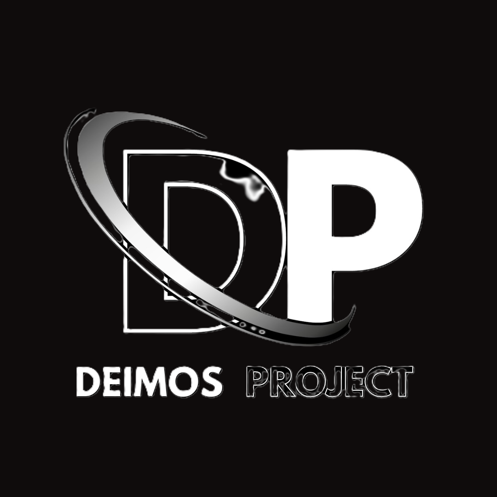

MOD-01
Mars Explorer
Interactive map of Mars to navigate regions, landing sites and points of interest on the surface.
Pending

DEIMOS ProjectA command center for exploring Mars and planning missions. Navigate the planet's surface, test survival scenarios and study the history of robotic exploration, all from one place.
Each module is developed independently and connects here.
Interactive map of Mars to navigate regions, landing sites and points of interest on the surface.
Resource and survival simulator to plan oxygen, energy, time and distance for a crewed mission.
Rovers, missions and scientific discoveries: profiles, photographs, locations and historical records.
Interactive map of the Martian surface. This space is reserved for the map module developed by the team.
Mars Explorer module pending integration
The interactive map will render inside this container.
#mars-map-container
Resource planning for a crewed mission. Indicators remain empty until the simulator module is connected.
Awaiting module
Awaiting module
Awaiting module
Awaiting module
Survival Simulator module pending integration
Simulation controls and results will render inside this container.
#survival-simulator-container
Rover profiles, photographs, locations and historical records. Content will be provided by the archives module.
DEIMOS PROJECT is a Mars exploration and mission planning platform created by ORBITRON V2 for the NASA Space Apps Challenge 2026.
The platform brings together three complementary tools in a single command center: a surface explorer, a survival and resource simulator, and an archive of robotic exploration.
DEIMOS PROJECT is an open, dependency-free web platform. Its architecture separates a stable navigation shell from three independently developed modules that mount into fixed containers.